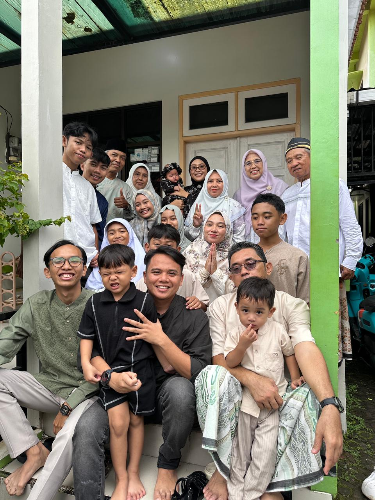
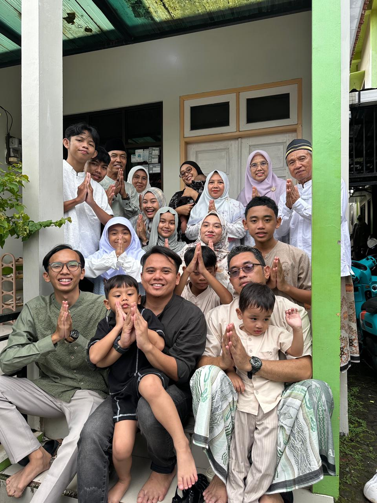

👨
Asep Saepudin
Ayah (Alm.)📖 Hobi: Membaca buku
Kepala keluarga yang tenang dan bijak.
Selamat datang di halaman profil keluarga kami!
Kami adalah keluarga Aziz yang tinggal di Desa Cibingbin, Kuningan, Jawa Barat. Kami hidup sederhana, saling menyayangi, dan selalu mengutamakan kebersamaan.
“Nurut, Jujur, dan Saling Membantu” — Motto Keluarga Aziz
📖 Hobi: Membaca buku
Kepala keluarga yang tenang dan bijak.
🍳 Hobi: Memasak
Koki andalan di rumah.
🎮 Hobi: Bermain Game
Selalu semangat dan rajin menabung.
Meski kini telah tiada, sosok Ayah (Asep) yang tenang dan bijak selalu hidup dalam kenangan dan doa kami. Nilai-nilai yang beliau ajarkan menjadi pegangan keluarga hingga hari ini.
اللهم اغفر له وارحمه
Allahummaghfir lahu warhamhu — Al-Fatihah untuk beliau 🤲| Waktu | Kegiatan | Jam |
|---|---|---|
| Akhir Pekan | 🚶 Jalan-jalan keliling desa | 16.00 |
| 🍽️ Makan bersama | 19.00 | |
| Hari Kerja | 🤝 Beraktivitas dan berkumpul | 19.00 |
Saling menghormati dan menyayangi.
Menjaga kejujuran dan kepercayaan.
Saling membantu dalam keadaan sulit.
Mengutamakan kebersamaan keluarga.
Hal-hal kecil yang membuat keluarga kami semakin dekat.
Setiap akhir pekan kami menikmati suasana desa Cibingbin bersama.
Masakan Ibu selalu jadi alasan kami berkumpul di meja makan.
Berkumpul dengan keluarga besar untuk mempererat tali persaudaraan.
Mengirim doa dan mengenang kebaikan Ayah dalam keseharian kami.
Kenangan indah bersama keluarga Aziz dalam silaturahmi keluarga besar Bani Wahid. (Klik foto untuk membukanya dalam ukuran penuh)


Lihat biodata, skill, dan project Aziz di web utama.